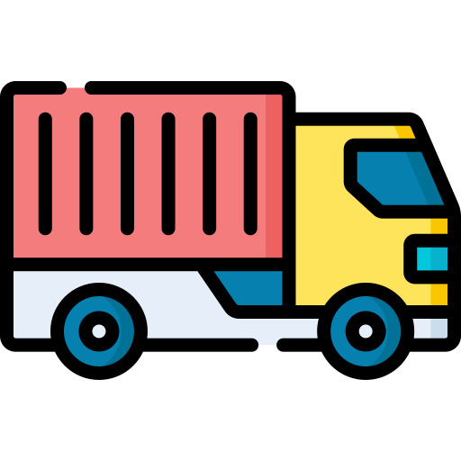

Navlun Nedir?
Navlun, deniz taşımacılığında kullanılan bir terim olup, yük taşıma hizmeti karşılığında ödenen ücret anlamına gelir. Genellikle gemi, tren, kamyon veya uçak gibi taşıma araçlarıyla mal veya yük taşınmasında kullanılır. Navlun, uluslararası ticarette önemli bir maliyet unsuru olup, malın göndericisi (ithalatçı) veya alıcısı (ihracatçı) tarafından ödenebilir.

Navlun Nasıl Hesaplanır ?
Navlun hesabı yapmak için öncelikle gönderi şekline karar vermek gerekir. Nakliye hizmet bedeli olarak da tanımlanan taşıma bedeli, malın hava, deniz veya kara yoluyla gönderilmesine göre değişir.

Havayolu Taşımacılığında Navlun Bedeli Hesaplama
Havayolu taşımacılığı, kısa transit süresinden dolayı tercih edilen bir sevkiyat yoludur. Bu yöntem, özellikle küçük hacimli ve hafif yükler ile bozulabilir yüklerin gönderilmesinde kullanılır. Malların üst üste istiflenip istiflenemeyeceği de taşıma bedeli hesaplamasında dikkate alınması gereken bir kriterdir. Malzeme ölçüleri, brüt ağırlık ve hacim ağırlık göz önünde bulundurularak fiyat çalışması yapılır. Havayolu taşımalarında navlun hesaplaması yapılırken 1 m³ = 167 kg olarak kabul edilir.
Karayolu Taşımacılığında Navlun Bedeli Hesaplama
Karayolu taşımacılığında taşıma şekli, Parsiyel navlun hesabında "chargeable weight" olarak ifade edilen ağırlık dikkate alınır. Karayolu taşımacılığında 1 m³ tonajı 333 kg olarak kabul edilir.
Denizyolu Taşımacılığında Navlun Bedeli Hesaplama
Denizyolu taşımacılığı, özellikle hacimli yüklerin taşınması için idealdir. Denizyolu taşımacılığında navlun hesaplama, limandan limana taşınacak yüklerin taşıma maliyetleri dikkate alınarak yapılır. Navlun hesaplaması yaparken, öncelikle yükün hacimsel ağırlığını belirlemek gerekir. Toplam hacmin reel ağırlıktan fazla olması durumunda, hesaplama hacim üzerinden yapılırken, ağırlığın hacimden fazla olması durumunda ağırlık verisi dikkate alınır. Parsiyel yüklerde, palet ölçüleri x konteyner yüksekliği x palet sayısı x 1000 m³ üzerinden hesaplama yapılır. Bu hesaplama, yükün toplam hacmini verir.